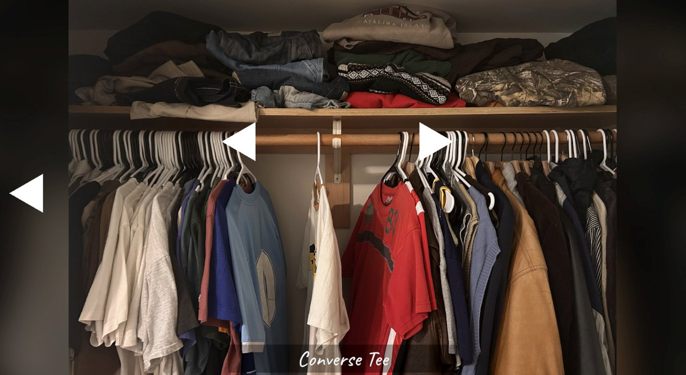
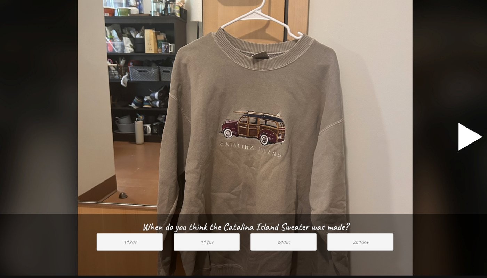
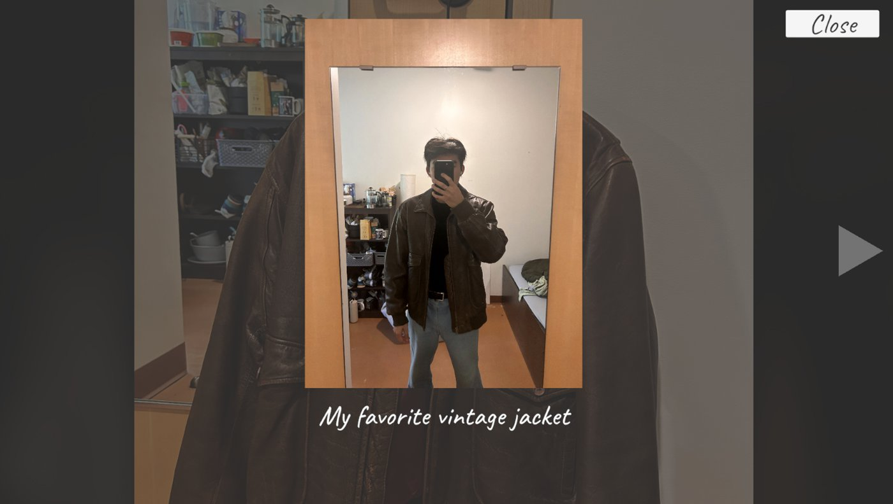

Pre-Loved is a small browser game built from photos of my own closet. You scroll the rack, pull out a thrifted or vintage piece, guess what decade it's from, and then look closely at its details and see it worn. I made it solo in Unity for a "Media Island" project in my interactive media course this fall.
The Idea
Most of my clothes had a life before me, so I wanted to turn my closet into a space you can explore where each garment holds a small story. There's a Catalina Island crewneck that reminds me of home, a soccer jersey my dad brought back from Bilbao, a Nagano tee I dug out of a pile in Thailand, a leather jacket, and Japanese selvedge denim, which is the only thing in my wardrobe I bought retail.
How It Plays
The left and right arrows scroll the rack, and the garment in the center is labeled. Clicking it takes it out to a mirror view, where you guess the decade (1980s, 1990s, 2000s, or 2010s+) until you get it right. Then you click spots on the garment, like the tag, crest, cuffs, or print, to see close-up photos with notes on how those details date a piece of clothing. A "try it on" spot shows a mirror photo of me wearing it.

Built From Photos
Instead of drawn art, the whole game is built from about 40 phone photos I shot in one setup. The closet is a single photo swapped between frames as you scroll, so each garment slides to the center in turn. I used Caveat as the font to keep it feeling handwritten and personal, and it ships as a WebGL build you play in the browser.
How It's Built
The game runs on 14 C# scripts, including a view manager with arrow navigation, a frame-based rack, a mouse interactor, a mirror view, an inspect viewer, and the decade quiz. Each garment is its own data asset with a name, mirror photo, caption, and decade answer, so adding a garment means making a new asset rather than writing new code. Like my other class projects, the code sticks to concepts from our course tutorials so I could explain every system in class.
The concept, photography, writing, and scene setup are mine, and I wrote the C# scripts with help from Claude. Sound effects are from Pixabay.

Through This Project I've Learned and Practiced